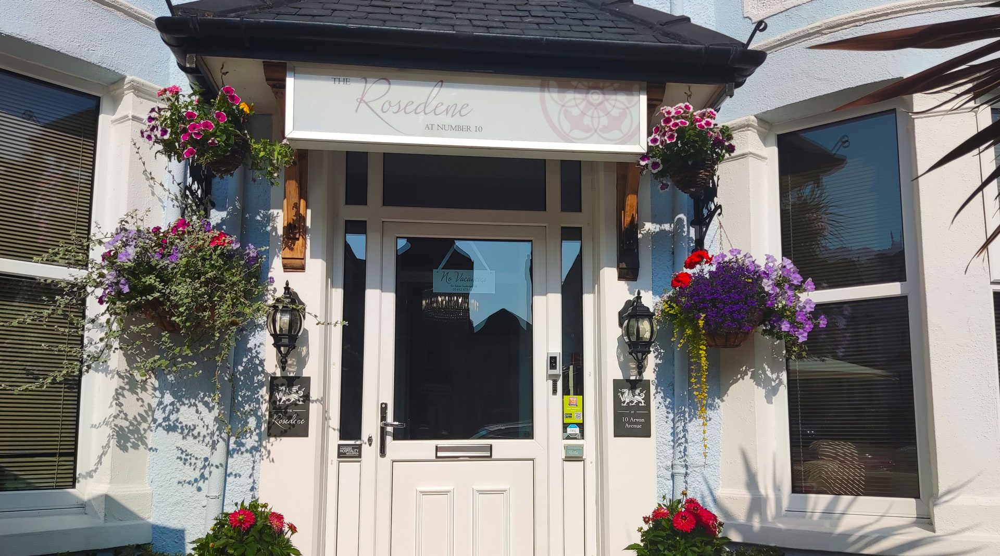
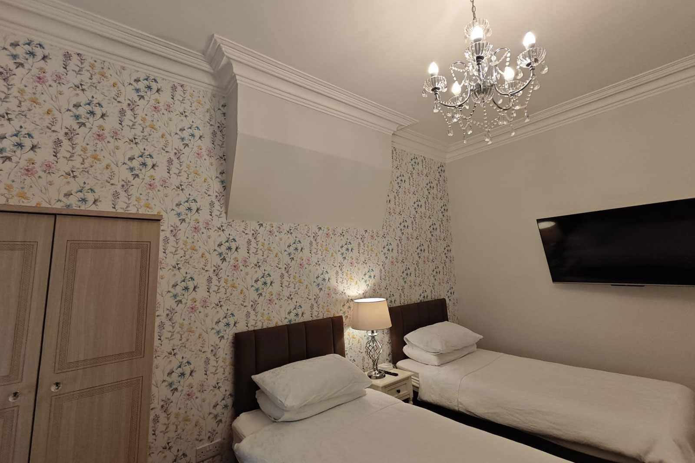
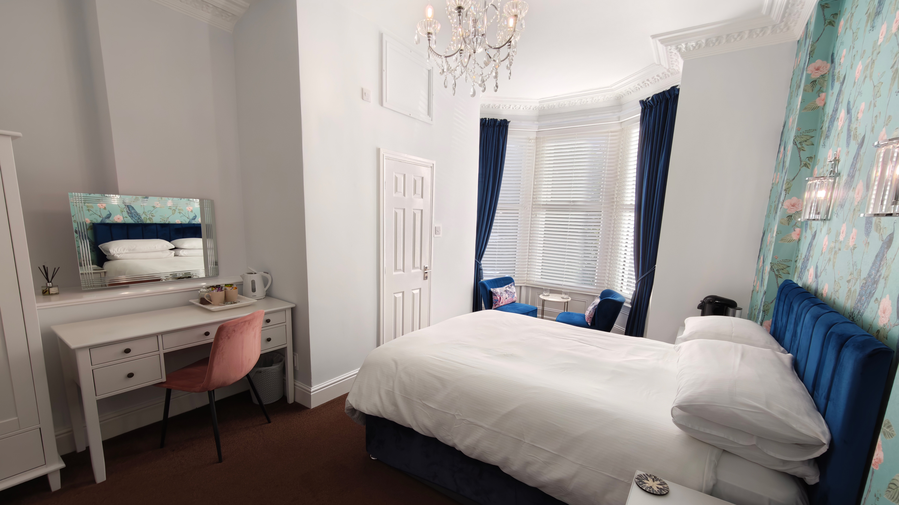
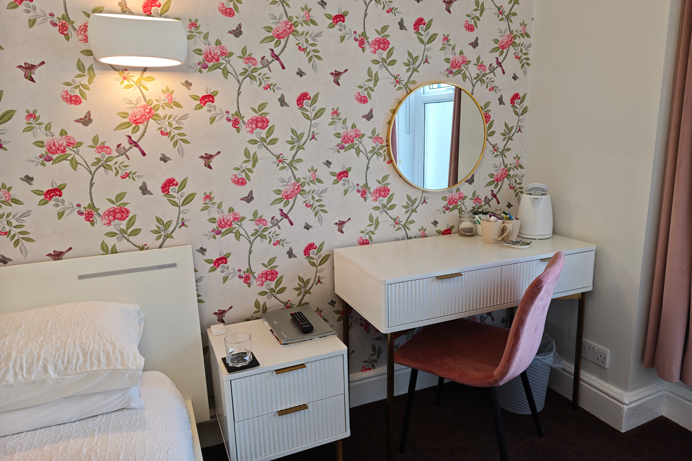
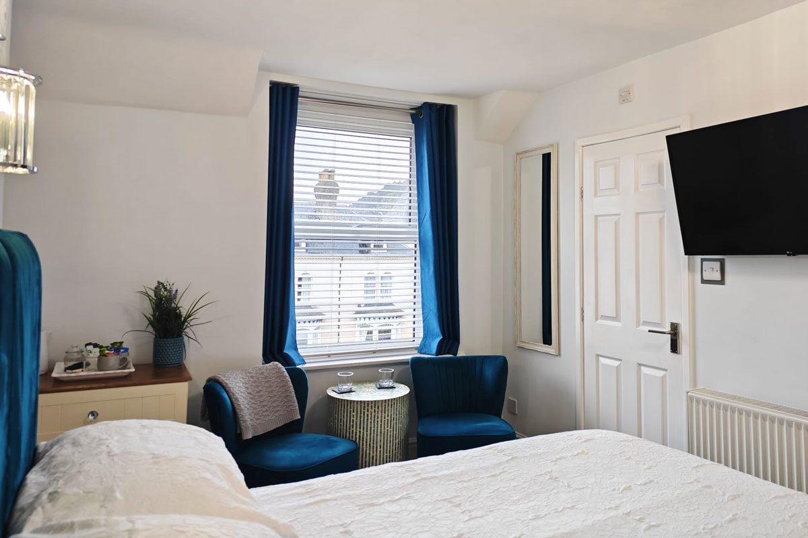
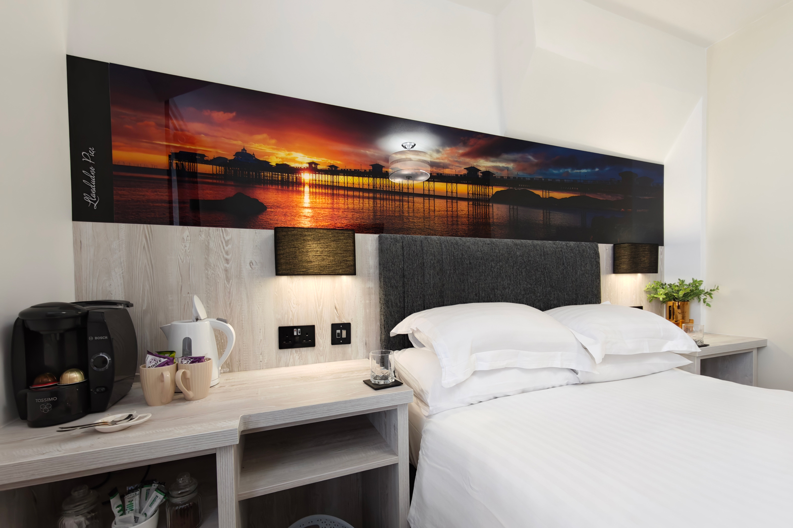
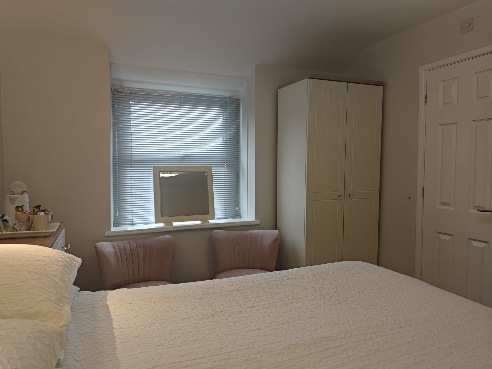
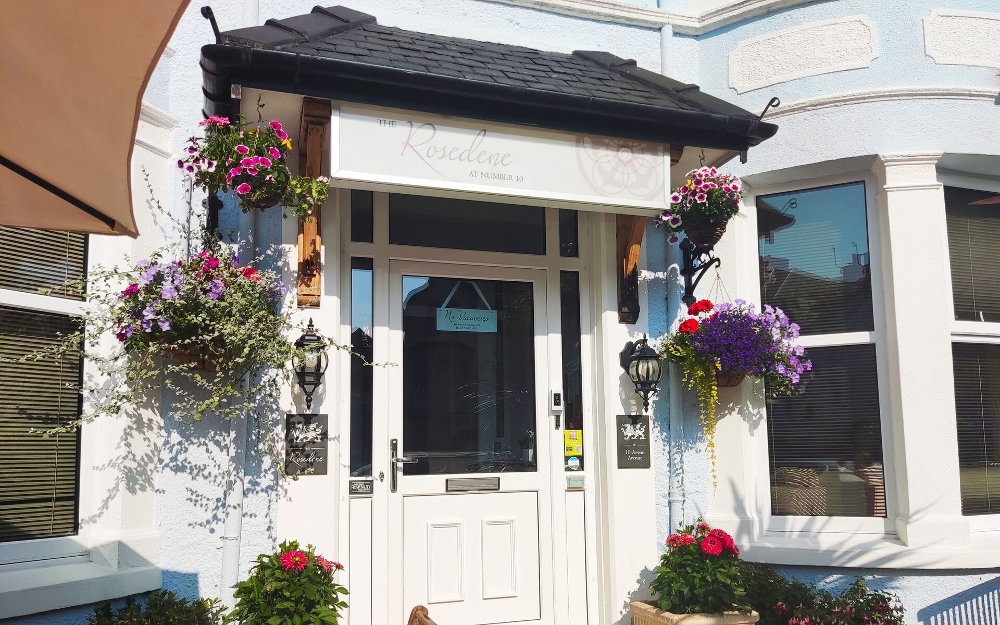
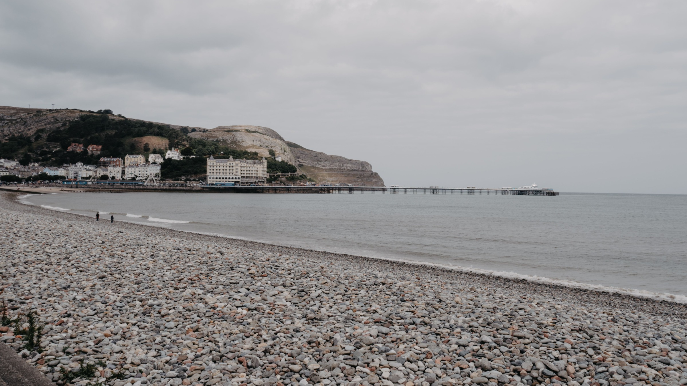

A beautifully restored Victorian guest house on a quiet, tree-lined avenue — elegant rooms, thoughtful hosting, and mornings that are entirely your own.
Explore Our Rooms
The Rosedene is an independently run boutique guest house in the heart of Llandudno — moments from the promenade, the pier and the Great Orme Tramway, yet quiet enough for a proper night's sleep.
Hosts Mark & Andrea call it “Bed & Breathe”: room-only by design, with no breakfast bell — instead, Llandudno's best independent breakfast rooms and cafés are a short stroll away, and the day moves at your pace.
Secure keyless self check-in means you can arrive whenever suits — even after a show at Venue Cymru — and the best rate is always guaranteed when you book direct.
Ten individually appointed rooms. Best rate guaranteed direct — rates on request.

2 single beds · Ground floor · Rear view
Rates on request

King bed · First floor · Front view
Rates on request

King bed · First floor · Rear view
Rates on request

1 double + 1 single · Second floor · Great Orme view
Rates on request

Double bed · Second floor · Great Orme view
Rates on request

1 king + 1 single · Second floor · Rear view
Rates on request
Also available: Room 2 Classic Double, Room 5 Light-Filled Deluxe Double, Room 7 Second Floor Standard Double and Room 9 Great Orme Single.


The Rosedene, 10 Arvon Avenue, Llandudno, LL30 2DY, North Wales
Phone: 01492 876 491
Email: info@therosedene.co.uk